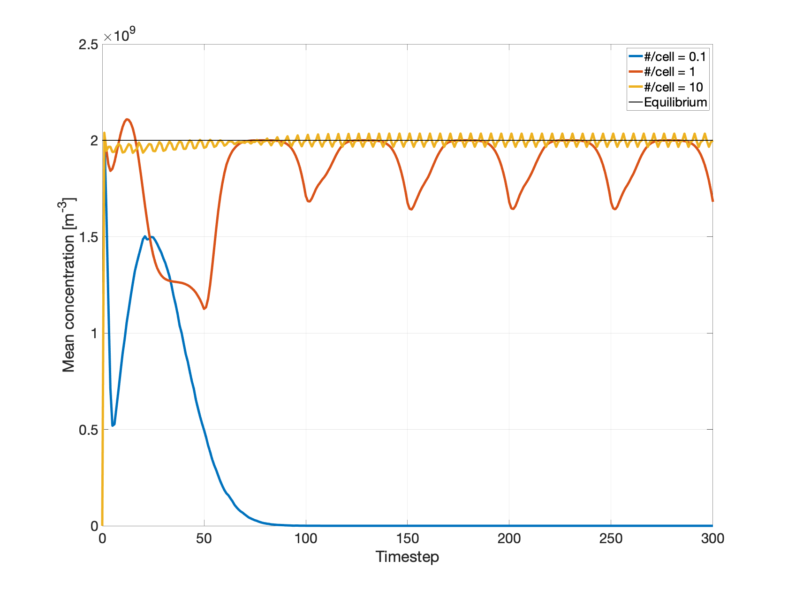

Unipolar ions: uniform source and loss¶
Problem Statement¶
The bipolar balance equation (in the absence of aerosol particles) is
where \(n_\pm\) are respective ion concentrations and \(\alpha\sim10^{-12} \: \mathrm{m}^3 \: \mathrm{s}^{-1}\) [Harrison and Tammet]. Sans aerosols, \(n_+=n_-\), so that a single species reads
dragion can be tested against this unipolar balance equation with a uniform VolumeSource and CollisionalSinkUnipolar; the implementation is in dragion/simulations/unipolar/sourcesinktest/SourceSinkTest.java.
The VolumeSource uniformly distributes particles across the simulation Box at a steady rate, representing the constant source term \(q\).
The CollisionalSinkUnipolar algorithm simulates the loss term \(- \alpha n^2\) by overlaying a uniform grid on the simulation domain, and at each timestep
(1) computing \(n^2\) in each grid cell
(2) removing \(\alpha \: n^2 \: \mathrm{d}t \: \mathrm{d}^3r \: / np2c\) macroparticles from each grid cell (leaving zero if exceeding existing number)
We would expect the simulated \(\frac{\mathrm{d}n}{\mathrm{d}t}\) to equal \(0\), integrated over many timesteps; in other words, the simulated concentration should be constant.
Numerical Validation¶
Taking \(q = 4\times10^6 \mathrm{m}^{-3} \mathrm{s}^{-1}\) and \(\frac{\mathrm{d}n_+}{\mathrm{d}t}=0\) yields a steady-state unipolar concentration of \(n_{equil}=\sqrt{\frac{q}{\alpha}}=2\times10^9 \: \mathrm{m}^{-3}\) [Lorenz, MMRTG].
The SourceSinkTest starts with an empty 5 m simulation box. As time progresses the VolumeSource fills the domain with macroparticles, until the “real” concentration reaches \(n_{equil}\).
Crucial simulation parameters are the macroparticle “size”, controlled by \(np2c\) and the grid spacing used for particle-particle collisions. For this numerical experiment the collision grid cell-size is the domain length divided by 64. At \(np2c=10^7\) the mean concentration peaks rapidly but then unphysically falls off: the number of macroparticles per grid-cell is far too low, with cell size / particle size ratio :math:=`(5 mathrm{m}/64)^3/(n_{equil}/np2c) = 0.1`. Reducing \(np2c\) by two orders of 10 increases the # particles per grid cell to \(~10\), and the expected steady-state concentration is maintained.
